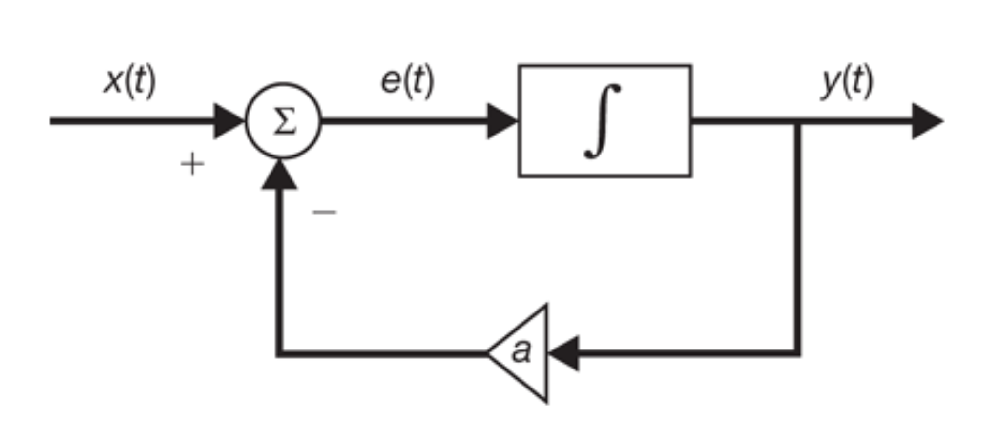
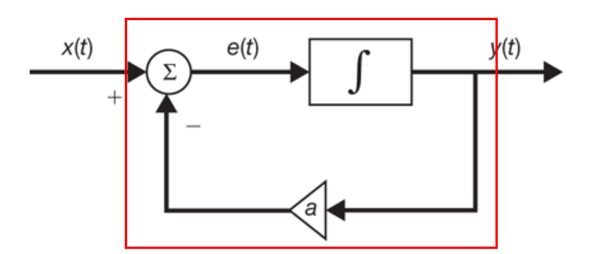
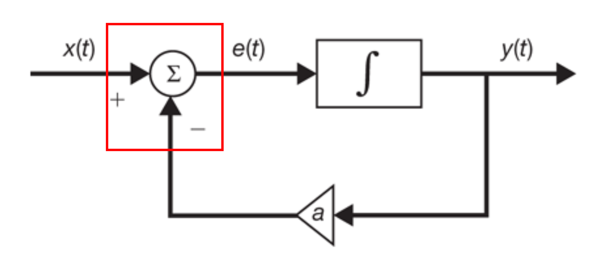
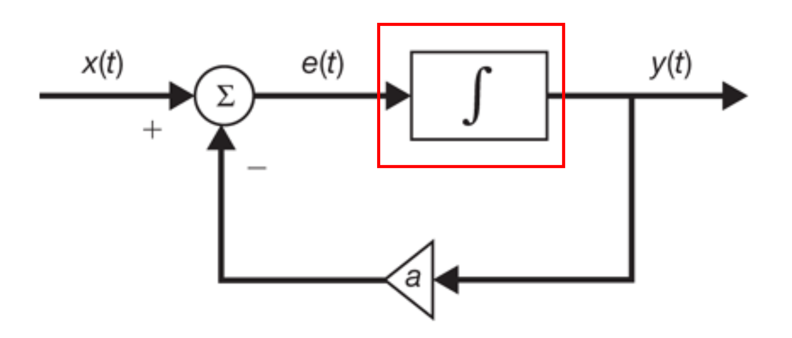
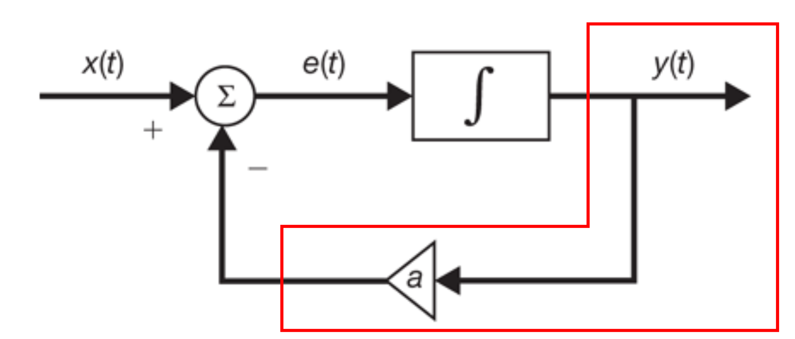

<!doctype html>
<html>
    <head>
        <meta charset="utf-8">

        <title>Formal Semantics of the Yampa Functional Reactive Programming Language</title>

        <meta name="apple-mobile-web-app-capable" content="yes" />
        <meta name="apple-mobile-web-app-status-bar-style" content="black-translucent" />

        <meta name="viewport" content="width=device-width, initial-scale=1.0, maximum-scale=1.0, user-scalable=no, minimal-ui">

        <link rel="stylesheet" href="css/reveal.css">
        <link rel="stylesheet" href="css/theme/night.css" id="theme">

        <!-- Code syntax highlighting -->
        <link rel="stylesheet" href="lib/css/zenburn.css">

        <!--[if lt IE 9]>
            <script src="lib/js/html5shiv.js"></script>
        <![endif]-->

        <!-- fork me on github -->
        <link rel="stylesheet" href="//cdnjs.cloudflare.com/ajax/libs/github-fork-ribbon-css/0.1.1/gh-fork-ribbon.min.css" />

        <style rel="stylesheet">
            .reveal .progress {
                height: 12px !important;
            }
            .reveal .slide-number {
                font-size: 32px !important;
            }
        </style>
    </head>

    <body>
        <div class="reveal">
            <div class="slides">
                <section data-markdown data-separator="^---" data-separator-notes="^Note:">
                    <script type="text/template">
                        ## Formal Semantics of the Yampa Functional Reactive Programming Language
                        ### s1200230
                        ### Hisayuki Mima
                        Note:
                        I'm going to introduce my research, the formal semantics of Yampa and the correctness of its implementation.
                        ---
                        ## Table of Contents
                        * Table of Contents
                        * FRP
                        * Yampa
                        * Motivation
                        * Semantics of Yampa
                        * Interpreter of Yampa
                        * Correctness
                        * Result
                        * Reference
                        Note:
                        This is the table of contents.
                        I will first talk about FRP and Yampa as the background of my research.
                        And then I'll talk about my motivation.
                        Then I'll introduce my research.
                        ---
                        ## FRP
                        * Functional Reactive Programming
                        * Declarative programming paradigm
                        * Main idea of FRP
                            * Behavior
                            * Event
                        Note:
                        First, I'll talk about FRP.
                        FRP stands for Functional Reactive Programming.
                        It is one of the declarative programming paradigm.
                        Its main ideas are Behavior and Event.
                        Let's take a closer look at them.
                        ---
                        ## Behavior
                        * Time-varying value
                        * Continuous
                        * Considered as mathematical function:
                        $$ x : \mathbb{R} \rightarrow  a $$
                        * Examples
                            * $ x(t) = \sin(t) $
                            * $ y(t) = e^t $
                            * Current mouse position
                        Note:
                        Behavior is continuous, time-varying value.
                        Since the behavior is counituous, it is considered as mathematical function taking time and returning some value.
                        There are some examples of behavior.
                        The sine function and the function e to the t can be behaviours.
                        And, current mouse position can also be a behavior in graphical user interface programming.
                        ---
                        ## Event
                        * Time-ordered sequence of event occurrences
                        * Discrete
                        * Examples
                            * Mouse button event
                            * Keyboard event
                        Note:
                        Next, Event is discrete, time-ordered sequence of event occurrences.
                        Mouse button event and keyboard event can be examples of FRP event.
                        ---
                        ## Example of FRP
                        
                        <pre><code class='haskell' data-trim data-noescape>
                        a :: Double
                        a = 1.0

                        f :: SF Double Double
                        f = loop $ arr (\(x, ay) -&gt; x - ay)
                               &gt;&gt;&gt; integral
                               &gt;&gt;&gt; arr (\x -&gt; (x, a * x))
                        </code></pre>

                        Note:
                        This is an example of FRP.
                        You can easily find the correspondence between the diagram and the program.
                        ---
                        ## Example of FRP
                        
                        <pre><code class='haskell' data-trim data-noescape>
                        a :: Double
                        a = 1.0

                        f :: SF Double Double
                        f = <span style='color: red;'>loop</span> $ arr (\(x, ay) -&gt; x - ay)
                               &gt;&gt;&gt; integral
                               &gt;&gt;&gt; arr (\x -&gt; (x, a * x))
                        </code></pre>

                        Note:
                        The feedback of the diagram corresponds to the loop primitive.
                        ---
                        ## Example of FRP
                        
                        <pre><code class='haskell' data-trim data-noescape>
                        a :: Double
                        a = 1.0

                        f :: SF Double Double
                        f = loop $ <span style='color: red;'>arr (\(x, ay) -&gt; x - ay)</span>
                               &gt;&gt;&gt; integral
                               &gt;&gt;&gt; arr (\x -&gt; (x, a * x))
                        </code></pre>

                        Note:
                        This part of the diagram corresponds to this primitive.
                        ---
                        ## Example of FRP
                        
                        <pre><code class='haskell' data-trim data-noescape>
                        a :: Double
                        a = 1.0

                        f :: SF Double Double
                        f = loop $ arr (\(x, ay) -&gt; x - ay)
                               &gt;&gt;&gt; <span style='color: red;'>integral</span>
                               &gt;&gt;&gt; arr (\x -&gt; (x, a * x))
                        </code></pre>

                        Note:
                        The integrator corresponds to integral primitive.
                        ---
                        ## Example of FRP
                        
                        <pre><code class='haskell' data-trim data-noescape>
                        a :: Double
                        a = 1.0

                        f :: SF Double Double
                        f = loop $ arr (\(x, ay) -&gt; x - ay)
                               &gt;&gt;&gt; integral
                               &gt;&gt;&gt; <span style='color: red;'>arr (\x -&gt; (x, a * x))</span>
                        </code></pre>

                        Note:
                        And this part corresponds to this primitive.
                        ---
                        ## Application of FRP
                        * Animation
                        * GUI
                        * Robotics
                        * Computer game
                        Note:
                        There are some applications of FRP: animation, graphical user interface design, robotic, and computer game programming.
                        ---
                        ## Yampa
                        * FRP library
                        * Haskell
                        * Signal and Signal Function
                        * Uses signals as both behaviors and events
                        Note:
                        That's all about FRP and next I'll talk about Yampa.
                        Yampa is a FRP library written in Haskell.
                        And Yampa consists of signals and signal functions.
                        Yampa uses its signals as behaviors and events in FRP.
                        Signal functions in Yampa are considered as behavior transformer, taking a behavior and returning another behavior.
                        The main concept of Yampa is signal function, so signals is not appear explicitly in souce code with Yampa.
                        ---
                        ## Motivation
                        * "Functional Reactive Programming from First Principles"
                            * Correctness of FRP
                            * Stream based implementation
                        * Yampa
                            * Automata based implementation
                        * Proving the correctness of Yampa
                            * $\textsf{time}$
                                * Implemented by $\textsf{constant c}$, $\textsf{integral}$, and $\textsf{sf1 >>> sf2}$

                        <pre><code class='haskell' data-trim>
                        time :: SF a Time
                        time = constant 1 >>> integral
                        </code></pre>
                        Note:
                        That's all of my brief introduction of Yampa.
                        And next, I'll talk about my motivation.
                        There is a previous research about FRP: "Functional Reactive Programming from First Principles".
                        In Frist Principles, they proved the correctness of FRP implementation.
                        But the implementation in First Principles is stream based and the implementation of Yampa is mealy automatan based.
                        This means that the result of First Principles cannot be applied directly to Yampa.
                        So I'm interested in the correctness of the implementation of Yampa, and tried to prove it.
                        In this research, I chose the Yampa primitive time and proved the correctness of it.
                        The semantics of time is simple, but the implementation of time is interesting.
                        Time is implemented by constant, integral, and composition.
                        This is why I chose time.
                        Due to the implementation of time, I also proved the correctness of the three Yampa primitives.
                        ---
                        ## How to show the correctness
                        * Correspondance between semantics and interpreter
                        * Semantics: $S$
                        * Interpreter: $\widetilde{S}$
                        * Limit of the interpreter: $\widetilde{S}^*$

                        $$ \widetilde{S}^* = S $$

                        Note:
                        That's all about my motivation.
                        Next, I'll talk about my research.
                        There are several ways for showing the correctness.
                        One way for this is giving semantics and an interpreter, and proving the correspondence between them.
                        Semantics of a Yampa expression is the meaning of a Yampa expression.
                        For example, semantics of Yampa expression integral can be integration in mathematics.
                        I defined semantics as a semantic function S and an interpreter S tilde.
                        I also defined the limit of the interpreter, S tilde star, and showed the correctness of Yampa expressions by proving this equation.
                        ---
                        ## Semantics of Yampa
                        $$ S: \langle \textsf{SF a b} \rangle \rightarrow (\mathbb{R}^+ \rightarrow a) \rightarrow (\mathbb{R}^+ \rightarrow b) $$

                        $$\begin{eqnarray}
                        S\textsf{constant c}(f)(t) &=& \lfloor \textsf{c} \rfloor \\\\
                        S\textsf{sf1 >>> sf2}(f)(t) &=& S\textsf{sf2}(S\textsf{sf1}(f))(t) \\\\
                        S\textsf{integral}(f)(t) &=& \int\_0^t f(s) ~ ds \\\\
                        S\textsf{time}(f)(t) &=& t \\\\
                        \end{eqnarray}$$

                        * $ \langle \textsf{SF a b} \rangle $ : The set of haskell expressions of type $\textsf{SF a b}$
                        * $ \mathbb{R}^+ = \\{ x \in \mathbb{R} ~ | ~ x \geq 0 \\} $
                        * $ \lfloor \textsf{e} \rfloor $: The denotation of Haskell expression $\textsf{e}$
                        Note:
                        Next I'll talk about the semantics of Yampa.
                        I first defined the semantic function S like this according to the documentation of Yapma.
                        S takes a Yampa expression, and returns a behavior transformer.
                        ---
                        ## Interpreter of Yampa
                        * Using GHC and the underlaying operating system
                            * Difficult to prove the correctness
                        * Abstract interpreter
                        Note:
                        Next I'll talk about the interpreter of Yampa.
                        Using GHC, a compiler for Haskell, and the underlaying operating system is too difficult to prove the correctness.
                        So I defined an abstract interpreter for Yampa.
                        ---
                        ## Interpreter of Yampa
                        $$\begin{array}{l}
                        \widetilde{S}: \langle \textsf{SF a b} \rangle \rightarrow \left[\mathbb{R}^+\right] \rightarrow [a] \rightarrow [b] \\\\
                        \widetilde{S}\textsf{sf}(ts)(xs) = run(\lfloor \textsf{sf} \rfloor)(ts)(xs) \\\\\\\\
                        run: SF \ a \ b \rightarrow \left[\mathbb{R}^+\right] \rightarrow [a] \rightarrow [b] \\\\
                        run(sf)(t:[])(x:[]) = snd(sf(x)):[] \\\\
                        run(sf)(t:t':ts)(x:x':xs) = \\\\
                        ~~~~ snd(sf(x)):run(\mathit{fst}(sf(x))(t'-t))(t':ts)(x':xs)
                        \end{array}$$
                        Note:
                        S tilde is the interpreter to run Yampa expression in the world of mathematics.
                        S tilde takes lists of sample times and inputs, then returns an output list.
                        ---
                        ## Limit of interpreter
                        <div style='font-size: 80%'>
                            \begin{array}{l}
                                \widetilde{S}^{\*}: \langle \textsf{SF a b} \rangle \rightarrow (\mathbb{R}^+ \rightarrow a) \rightarrow (\mathbb{R}^+ \rightarrow b) \\\\
                                \widetilde{S}^{\*}\textsf{sf}(f)(t) = \begin{cases}
                                    \displaystyle \lim\_{\left|P\_t\right| \rightarrow 0} last(\widetilde{S}\textsf{sf}(P\_t)(map(f)(P\_t))) & \textrm{if such limit exists} \\\\
                                    \perp & \textrm{otherwise}
                                \end{cases}
                            \end{array}
                        </div>
                        * $P\_t$ is a partition of closed interval $[0,t]$
                            * List of sample times
                        * $\left|P\_t\right|$ is a maximum interval
                            * $\displaystyle \lim\_{\left|P\_t\right| \rightarrow 0}$: The limit as sampling interval goes to $0$
                        Note:
                        Since the semantic function S takes a behavior and the interpreter S tilde takes an input list with sample times, we cannot compare them directly.
                        So I defined a function calculating the limit of the interpreter as the sampling interval goes to zero, called S tilde star.
                        ---
                        ## Correctness
                        $$ \widetilde{S}^\*\textsf{sf}(f)(t) = S\textsf{sf}(f)(t) $$
                        Note:
                        Then I showed the correctness of the four Yampa expressions by proving this equation.
                        ---
                        ## Correctness of $\textsf{constant c}$
                        ### Lemma 1
                        $$ last(run(\lfloor \textsf{constant}\rfloor (c))(ts)(xs)) = c $$

                        By induction on the length of $ts$ and $xs$
                        ---
                        ## Correctness of $\textsf{constant c}$
                        ### Proof of Lemma 1
                        Base case

                        $$
                        \begin{array}{l}
                            last(run(\lfloor \textsf{constant}\rfloor (c))(t:[])(x:[])) \\\\
                            = last(snd((\lfloor \textsf{constant} \rfloor (c))(x)):[]) \\\\
                            = last(c:[]) \\\\
                            = c
                        \end{array}
                        $$
                        ---
                        ## Correctness of $\textsf{constant c}$
                        ### Proof of Lemma 1
                        Induction Step

                        <div style='font-size: 80%'>
                            $$
                            \begin{array}{l}
                                last(run(\lfloor \textsf{constant}\rfloor (c))(t:t':ts)(x:x':xs)) \\\\
                                = last(snd((\lfloor \textsf{constant} \rfloor (c))(x)): \\\\
                                \qquad run((fst((\lfloor \textsf{constant} \rfloor (c))(x)))(t'-t))(t':ts)(x':xs)) \\\\
                                = last(run((fst((\lfloor \textsf{constant} \rfloor (c))(x)))(t'-t))(t':ts)(x':xs)) \\\\
                                = last(run(\lfloor \textsf{constant} \rfloor (c))(t':ts)(x':xs)) \\\\
                                = c
                            \end{array}
                            $$
                        </div>
                        ---
                        ## Correctness of $\textsf{constant c}$
                        ### Theorem 1
                        $$ \widetilde{S}^\*\textsf{constant c}(f)(t) = S\textsf{constant c}(f)(t) $$

                        By Lemma 1
                        ---
                        ## Correctness of $\textsf{constant c}$
                        ### Proof of Theorem 1
                        <div style='font-size: 80%'>
                        $$
                        \begin{array}{l}
                        \displaystyle \widetilde{S}^\*\textsf{constant c}(f)(t) \\\\
                        \displaystyle = \lim\_{\left|P\_t\right| \rightarrow 0} last(\widetilde{S}\textsf{constant c}(P\_t)(map(f)(P\_t))) \\\\
                        \displaystyle = \lim\_{\left|P\_t\right| \rightarrow 0} run(\lfloor \textsf{constant c} \rfloor)(P\_t)(map(f)(P\_t))) \\\\
                        \displaystyle = \lim\_{\left|P\_t\right| \rightarrow 0} run(\lfloor \textsf{constant} \rfloor(\lfloor \textsf{c} \rfloor))(P\_t)(map(f)(P\_t))) \\\\
                        \displaystyle = \lim\_{\left|P\_t\right| \rightarrow 0} \lfloor \textsf{c} \rfloor \\\\
                        \displaystyle = \lfloor \textsf{c} \rfloor \\\\
                        \displaystyle = S\textsf{constant c}(f)(t)
                        \end{array}
                        $$
                        </div>
                        ---
                        ## Result
                        * Correctness
                            * $\textsf{constant c}$
                            * $\textsf{integral}$
                            * $\textsf{sf1 >>> sf2}$
                            * $\textsf{time}$
                        Note:
                        I proved the correctness of 3 other Yampa primitives, integral, composition, and time in a similar way.
                        ---
                        ## Conclusion
                        * Defined semantics and an interpreter
                        * Proved the correctness of the Yampa primitives
                            * $\textsf{constant c}$
                            * $\textsf{integral}$
                            * $\textsf{sf1 >>> sf2}$
                            * $\textsf{time}$
                        * Future work
                            * $\textsf{arr f}$
                            * $\textsf{first sf}$
                            * $\textsf{loop}$
                        Note:
                        There are many other primitives in Yampa, such as arrow, first, and loop.
                        Proving the correctness of them can be a future work of this research.
                        That's all, thank you for your attention.
                    </script>
                </section>
                <!--p style="display: block; position: absolute; bottom: 0px; font-family: monospace"><a href="http://git.io/vBWIP">http://git.io/vBWIP</a></p-->
            </div>
        </div>

        <!--div class="github-fork-ribbon-wrapper right">
            <div style="background-color: #090" class="github-fork-ribbon">
                <a href="https://github.com/youxkei/slides/tree/gh-pages/midterm_presentation">Fork me on GitHub</a>
            </div>
        </div-->

        <script src="lib/js/head.min.js"></script>
        <script src="js/reveal.js"></script>

        <script>
            Reveal.initialize({
                controls: false,
                progress: true,
                history: true,
                center: true,
                slideNumber: 'c/t',
                margin: 0.02,
                minScale: 0,
                maxScale: 1024,

                transition: 'none', // none/fade/slide/convex/concave/zoom

                math: {
                    mathjax: 'https://cdn.mathjax.org/mathjax/latest/MathJax.js',
                    config: 'TeX-AMS_HTML-full'  // See http://docs.mathjax.org/en/latest/config-files.html
                },

                dependencies: [
                    { src: 'lib/js/classList.js', condition: function() { return !document.body.classList; } },
                    { src: 'plugin/markdown/marked.js', condition: function() { return !!document.querySelector( '[data-markdown]' ); } },
                    { src: 'plugin/markdown/markdown.js', condition: function() { return !!document.querySelector( '[data-markdown]' ); } },
                    { src: 'plugin/highlight/highlight.js', async: true, callback: function() { hljs.initHighlightingOnLoad(); } },
                    { src: 'plugin/zoom-js/zoom.js', async: true },
                    { src: 'plugin/notes/notes.js', async: true },
                    { src: 'plugin/math/math.js', async: true },
                ]
            });
        </script>
    </body>
</html>
